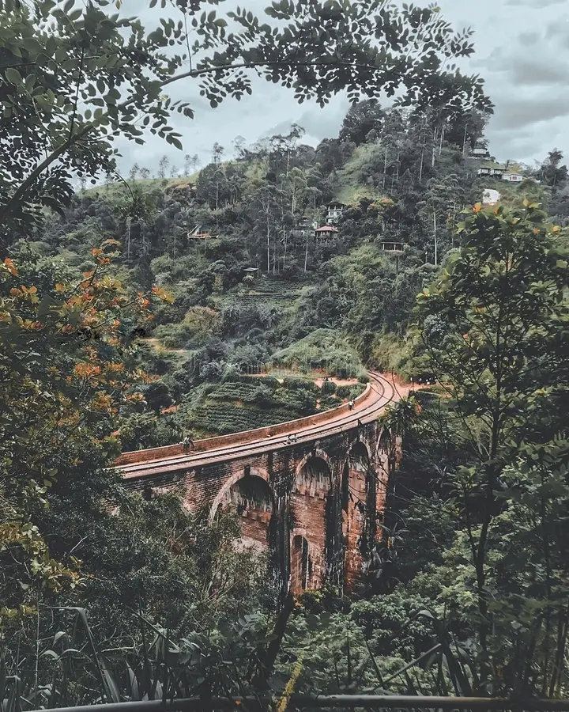
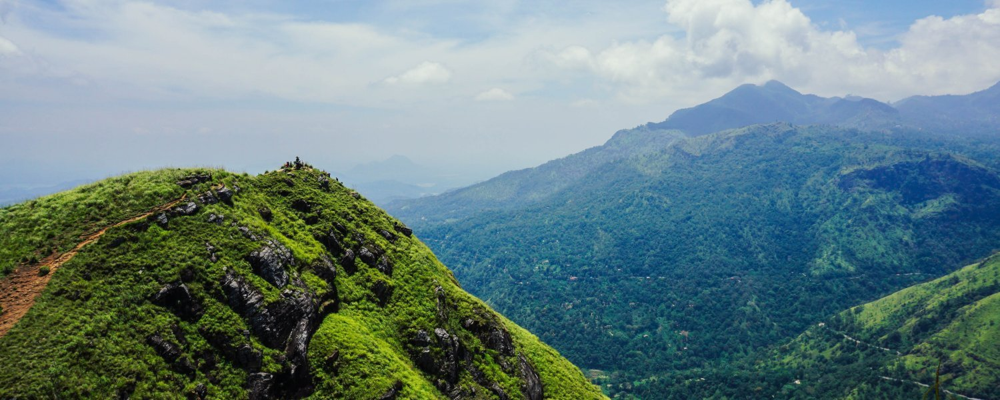
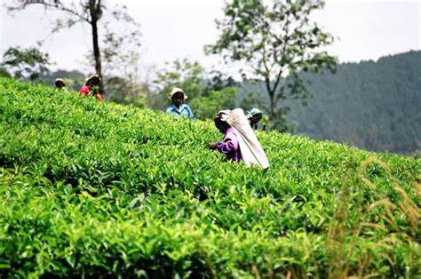
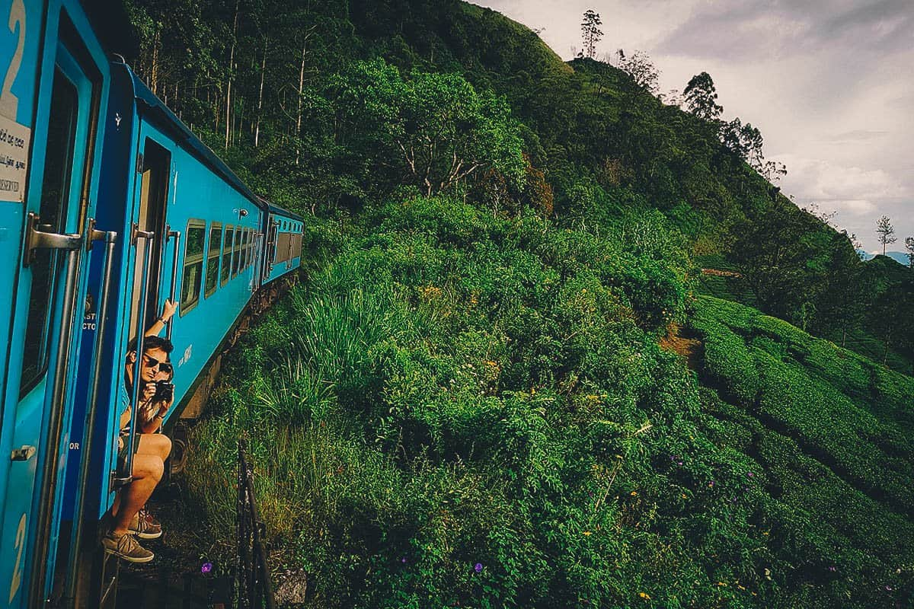

|  |  | |
|  |  | |
Immerse yourself in the enchanting upcountry atmosphere of Sri Lanka, marvel at an engineering marvel, trek to a stunning highland, and rejuvenate amidst the cascading waters of a waterfall.
| Highlights |
|
| Description |
|
| Includes |
|
| Booking Information |
|